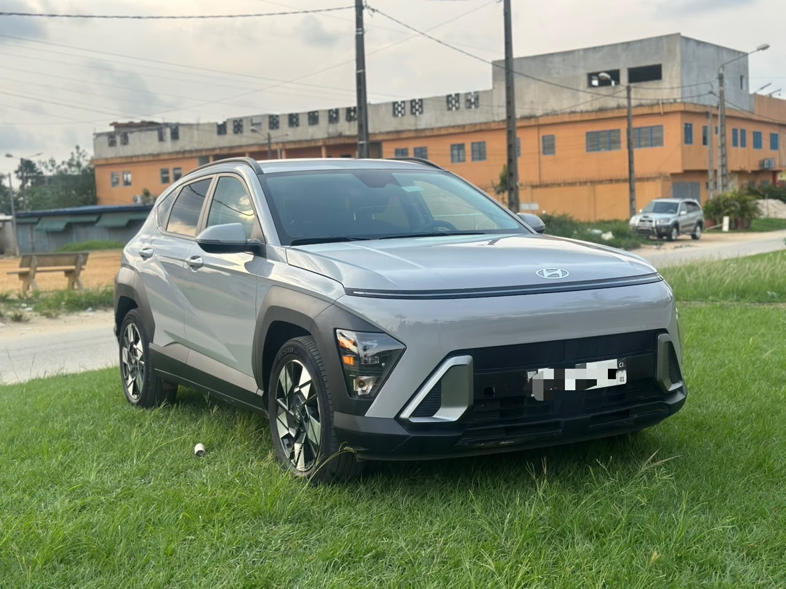

Rapide rapide rapideVente urgente
Hyundai Kona — juillet 2025
07/2025 · Semi-full · 32 871 km au compteur
15 500 000 FCFA
ModèleKona
Date annoncée07/2025
FinitionSemi-full
Kilométrage32 871 km au compteur
État annoncéTrès bien entretenu
DocumentsÀ jour selon le vendeur
Prix légèrement négociable.